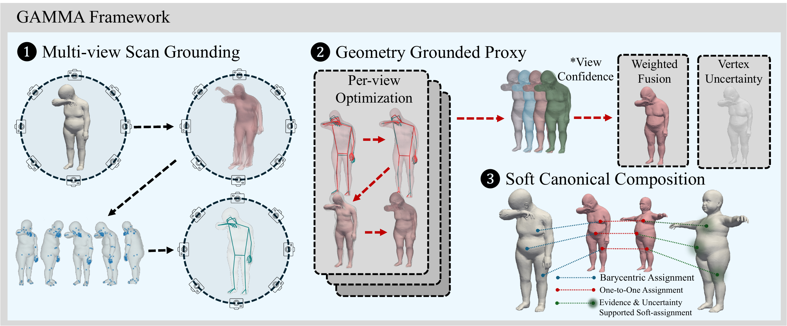
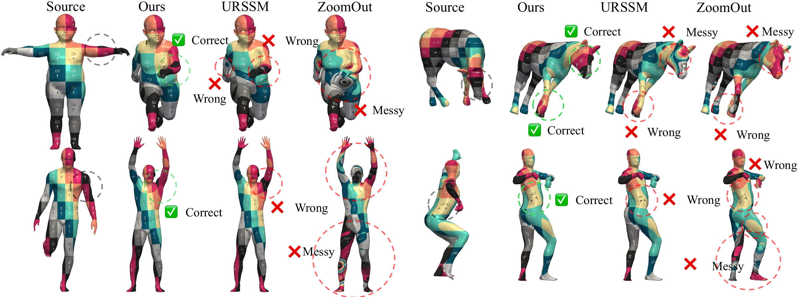
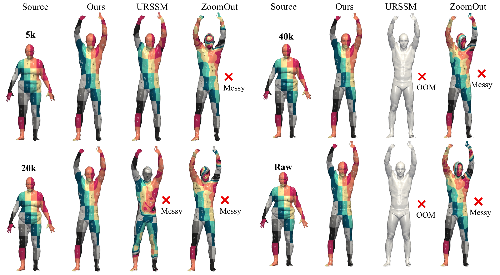
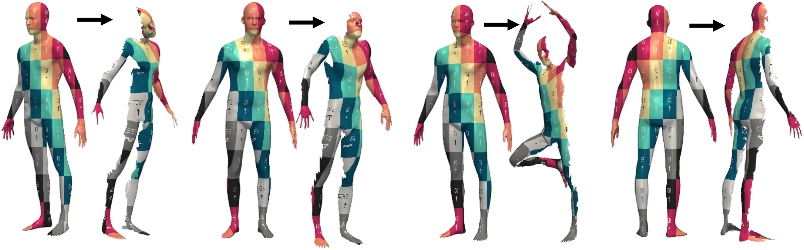
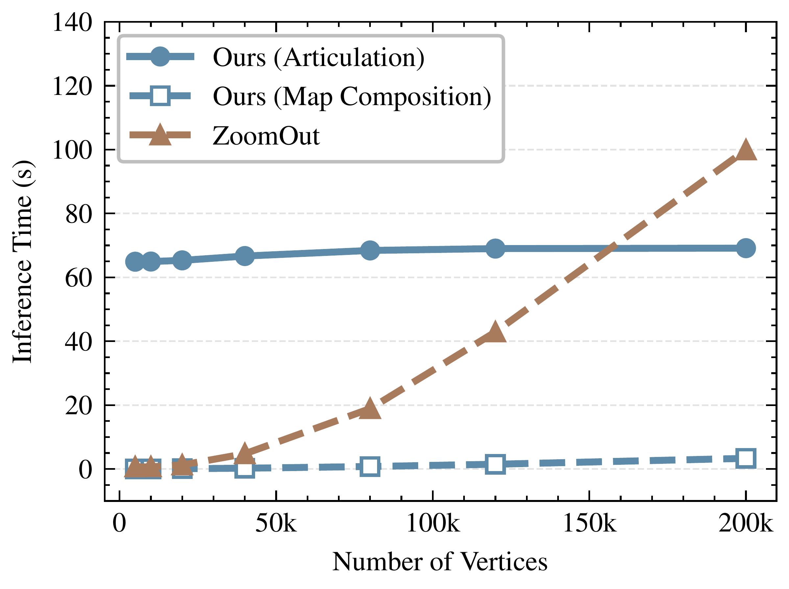

Abstract
Dense correspondence on in-the-wild 3D scans must handle severe non-isometric deformation, partial observations, topology artifacts, irregular discretization, and extreme resolution. Together, these conditions make shape matching both a robustness and scalability problem. Existing methods typically handle only part of this regime and often require expensive spectral or dense feature processing, repeated pairwise optimization, or dataset-specific training. To address the above issues, we present GAMMA, a zero-shot framework based on Geometry-Grounded Articulation. For each scan, GAMMA renders multiple views and uses a pretrained estimator with a category-specific parametric model to produce one template estimate per view. Because these estimates share a fixed vertex ordering, confidence-weighted consensus fuses them into one canonical template and establishes sparse matches across scans. We refine these matches on the input geometry to recover accurate dense correspondences. All core matching steps run at inference time and require neither target-dataset correspondence training nor costly Laplace–Beltrami operator (LBO) computation on the input scans. Each fused template is cached, so additional pair queries reuse the canonicalization. GAMMA obtains average geodesic errors of 2.9 on TOPKIDS and 2.4 on remeshed SMAL, reducing error relative to URSSM by 67% and 60%, respectively. Complementary evaluations report lower aggregate errors than the evaluated baselines on BeCoS-processed partial subsets and demonstrate stable matching accuracy from decimated FAUST meshes to raw scans with 160k–200k vertices. These results demonstrate accurate correspondence across complementary settings and collection-level scalability after per-shape caching.
Highlights
Geometry-grounded, zero-shot
Frozen category-specific estimators provide articulation priors. Test-time optimization fits each scan without target-benchmark correspondence training.
Robust correspondence
Confidence-weighted template consensus and sparse soft composition handle non-isometric deformation, partial observations, and irregular scans.
Reusable per-shape processing
Cached articulations serve additional pair queries. The primary matcher needs no input Laplace–Beltrami eigenbasis; spectral refinement is optional.
Method Overview


Qualitative Results






Benchmark Comparisons
Lower error is better. Bold and underlined entries mark the best and second-best results, including ties. Curated and partial benchmarks report target-domain mean geodesic error ×100; raw scans use a separate template-domain metric and are comparable only within that table.
Non-Isometric Shape Matching
SMAL contains animal shapes; TOPKIDS contains human shapes with strong non-isometric variation. “No Corr. Tr.” means no target-benchmark correspondence training. Baselines follow UniMatch’s common protocol, except Synchronous Diffusion.
| Method | Unsup. | No Corr. Tr. | Zero-Shot | SMAL | TOPKIDS |
|---|---|---|---|---|---|
| Axiomatic Methods | |||||
| ZoomOut | ✓ | ✓ | ✓ | 38.4 | 33.7 |
| Smooth Shells | ✓ | ✓ | ✓ | 36.1 | 11.8 |
| DiscreteOp | ✓ | ✓ | ✓ | 38.1 | 35.5 |
| Functional Map Methods | |||||
| UnsupFMNet | ✓ | ✗ | ✗ | - | 38.5 |
| SURFMNet | ✓ | ✗ | ✗ | - | 48.6 |
| AttentiveFMaps | ✗ | ✗ | ✗ | 5.4 | 23.4 |
| URSSM | ✓ | ✗ | ✗ | 6.0 | 8.9 |
| Synchronous Diff. | ✓ | ✗ | ✗ | 3.6 | 5.4 |
| Semantic Methods | |||||
| Diff3F | ✓ | ✓ | ✓ | 28.4 | 31.0 |
| DenseMatcher | ✗ | ✗ | ✗ | 4.7 | 6.2 |
| Template-based Methods | |||||
| GAMMA (ours) | ✓ | ✓ | ✓ | 2.4 | 2.9 |
| GAMMA (+Spec.-ICP) | ✓ | ✓ | ✓ | 3.7 | 2.3 |
| GAMMA (+ZoomOut) | ✓ | ✓ | ✓ | 6.0 | 3.3 |
Near-Isometric Shape Matching
Remeshed human benchmarks. The main GAMMA row uses no input LBO eigenbasis; +Spec.-ICP and +ZoomOut are optional spectral refinements. Baselines follow UniMatch’s common protocol, except Synchronous Diffusion.
| Method | FAUST | SCAPE | SHREC19 |
|---|---|---|---|
| Axiomatic Methods | |||
| BCICP | 6.4 | 11.0 | 8.0 |
| ZoomOut | 6.1 | 7.5 | 7.8 |
| Smooth Shells | 2.5 | 4.7 | 7.6 |
| Functional Map Methods | |||
| UnsupFMNet | 4.8 | 9.6 | 11.1 |
| SURFMNet | 2.5 | 6.0 | 4.8 |
| URSSM | 1.6 | 1.9 | 5.7 |
| Synchronous Diff. | 1.5 | 1.8 | 3.4 |
| Semantic Methods | |||
| Diff3F | 20.7 | 22.1 | 26.3 |
| DenseMatcher | 1.6 | 2.0 | 3.1 |
| UniMatch | 1.6 | 1.9 | 3.2 |
| Template-based Methods | |||
| 3D-CODED | 2.5 | 9.8 | 7.7 |
| GAMMA (ours) | 1.5 | 1.8 | 3.0 |
| GAMMA (+Spec.-ICP) | 1.3 | 1.7 | 3.1 |
| GAMMA (+ZoomOut) | 1.5 | 1.9 | 3.2 |
High-Resolution Raw Scans
Template-domain mean geodesic error ×100 over the same 400 directed pair queries from 20 test scans at every resolution. Raw scans have 160k–200k vertices. ZoomOut uses chunked nearest search; URSSM’s OOM denotes an out-of-memory failure of the evaluated implementation.
| Method | 5k | 10k | 20k | 40k | 80k | 120k | Raw |
|---|---|---|---|---|---|---|---|
| ZoomOut (ch.) | 20.92 | 20.54 | 20.24 | 20.57 | 20.31 | 20.21 | 19.89 |
| URSSM (xyz) | 14.30 | 13.70 | 11.60 | OOM | OOM | OOM | OOM |
| URSSM (wks) | 10.30 | 20.80 | 15.90 | OOM | OOM | OOM | OOM |
| GAMMA (ours) | 2.42 | 2.25 | 2.18 | 2.16 | 2.16 | 2.13 | 2.11 |
Partial Shape Matching
BeCoS-processed FAUST and KIDS subsets. P-F: partial-to-full; P-P: partial-to-partial. URSSM is trained for 30 epochs on each corresponding training split. These results report correspondence error; the fraction of queries receiving a match is not reported.
| Method | FAUST P-F | FAUST P-P | KIDS P-F | KIDS P-P |
|---|---|---|---|---|
| ZoomOut | 42.2 | 68.7 | 30.0 | 40.1 |
| URSSM(xyz) | 22.4 | 20.6 | 40.2 | 41.4 |
| URSSM(wks) | 31.9 | 27.3 | 42.7 | 47.6 |
| GAMMA (ours) | 2.7 | 3.3 | 6.7 | 5.4 |
Scalability Through Caching
Across the raw-FAUST resolution sweep, articulation takes about 64.9–69.1 seconds per shape. Cached map composition takes 0.024–3.33 seconds per directed pair.
At raw resolution, processing 20 shapes and all 400 directed queries takes approximately 45.3 minutes, compared with 666 minutes for chunked ZoomOut. A single uncached pair takes about 141.5 seconds for GAMMA versus 99.9 seconds for chunked ZoomOut: the measured advantage comes from reusing articulations across a collection.


Citation
@article{liu2026gamma,
title = {Geometry-Grounded Articulation and Test-Time Adaptation for Zero-Shot, Scalable Shape Matching in the Wild},
author = {Qilong Liu and Qinfeng Xiao and Chenyuan Yi and Yongsheng Lin and Liying Zhang and Kit-lun Yick},
journal = {arXiv preprint arXiv:2606.29167},
year = {2026}
}